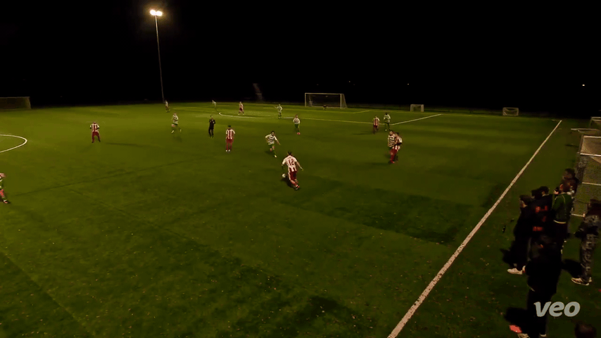

home_12: connecting defence to attack

Receives the first pass, then supplies a final-third entry.
The data identifies the passages. The footage shows the mechanism.

Receives the first pass, then supplies a final-third entry.

The counterattack finishes at 20 seconds—beyond the 15-second baseline.